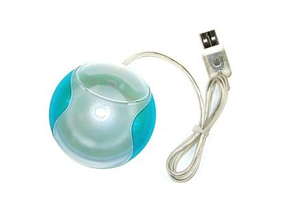

Tell me about a product that was designed poorly.

CANDIDATE: When I think about a product that was designed poorly, I think of the Apple’s hockey-puck mouse from the 1998 iMac. There are three reasons why:
First, it doesn’t work well. The round shape made it hard to orient. Without looking at the mouse, you cannot tell if you are holding it right side up, upside down, sideways. The mouse could have used some tactile cues to help determine its orientation.
Second, the design was excessive. The blue accents on the left and right do not deliver additional function. It could be misconstrued for buttons.
Third, the round shape was unique but not useful. Holding the mouse was just awkward.
Comments: A solid response from the candidate. It’s a unique product choice. Few candidates would mention this particular product. And at first glance, it’s ironic that Apple, a product design leader, would be called out for bad design. There’s a lot of thought and evidence included in this response, which lends the answer credibility and sincerity.